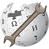

|  | wikigit |
wikigit is a github organization (organization page) intended for hosting the source code of open source tools, scripts, and bots associated with Wikipedia and other Wikimedia Foundation projects. It has no official affiliation with the Wikimedia Foundation. Its goal is to ensure that source code of tools is available and that others can take over maintainence of tools if the original author becomes unavailable. It also makes it easy to create new bots based on old bots.
Unlike Toolserver, it is easy to publish your tool on wikigit just by e-mailing an owner. If you want to contribute your tool or script, you have three options:
In all cases your project will be added to the list on this page. Remember to remove references to private information like account passwords from your published code (place these in a separate file).
Services are provided entirely by github, except for the wikigit.org domain name and e-mail, which is provided by Derrick Coetzee.
Owners are responsible for setting up new projects and ensuring that projects remain up-to-date even for authors who don't choose to push their own updates to git. Current owners below.
This is a comprehensive list of all wikigit projects, as well as links to some others.